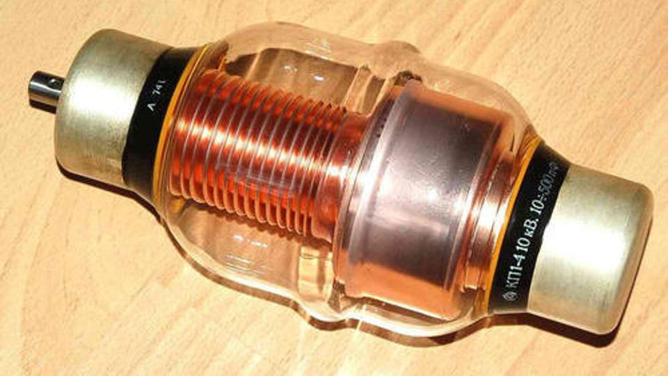

Godina: 1896.
Vakuumski promjenjivi kondenzator je promjenjivi kondenzator koji koristi visoki vakuum kao dielektrik umjesto zraka ili drugog izolacijskog materijala. To omogućuje veći napon od zračnog dielektrika koristeći manji ukupni volumen. Međutim, mnogi dielektrični elementi imaju veću jakost probojnog polja od vakuuma. Postoji nekoliko različitih izvedbi vakuumskih varijabli. Najčešći oblik su međusobno povezani koncentrični cilindri koji se nalaze u staklenoj ili keramičkoj vakuumskoj ovojnici, slično elektronskoj cijevi. Metalni mijeh koristi se za održavanje vakuumske brtve, a istovremeno omogućuje pozicionu kontrolu pokretnih dijelova kondenzatora. Nikola Tesla je 1896. godine prijavio patent za vakuumski kondenzator. Prvotna je uporaba bila poboljšati kvalitetu električnih komponenata za rukovanje "strujama visoke frekvencije i potencijala". Te su komponente bile potrebne za istraživanje istosmjernih impulsa koje je Tesla proučavao.